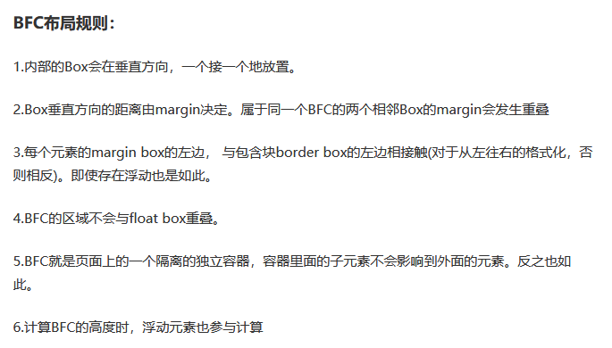

网上有些多年留下的翻译错误，不停的被转发，真是误人子弟一刚。
事情起因，群里有人发图：

那位朋友说规则第三点测试不对，想问解释。
然后我测试了一下,内部元素的margin box左边肯定是不会挤掉BFC的padding的，更不可能串到border-box的左边去。(你transform倒是可以=.=)
我就去看了W3C的原文：
In a block formatting context, each box’s left outer edge touches the left edge of the containing block (for right-to-left formatting, right edges touch).
哪里有说border-box?只是提到内部元素盒子会靠到包含块(containing block)的左边,并没有说靠在包含块的border-box上啊。
继续看W3C对containing box的定义：
The position and size of an element’s box(es) are sometimes calculated relative to a certain rectangle, called the containing block of the element.
我翻译一下：元素盒子的位置和大小又是是通过特定的方形确定的，称为元素的包含块。
关键是：这个包含块是内部元素的,而并不是BFC的。
下面简单说下包含块的方形由什么决定，仔细看的可以点上面的链接看原文：
- 根元素(html)的包含块是视窗的框框;
- 如果元素的
position是relative或者static,那么包含块就是最近祖元素的content edge(这个不知道是什么的去看盒模型); - 如果元素的
position是fixed,包含块是视窗的框框; - 如果元素的
position是absolute，那么包含块是通过position不为static的最近祖元素按以下规则继续判断：- 如果祖元素是行内元素，那么包含块就是行内元素的padding box的bounding box，如果行内元素跨越多行，那么包含块就是
undefined; - 其他情况：包含块都是祖元素的
padding edge。
- 如果祖元素是行内元素，那么包含块就是行内元素的padding box的bounding box，如果行内元素跨越多行，那么包含块就是
有什么问题，直接去看W3C的定义，中文语境太模糊了，翻译水平差的坑越带越深。